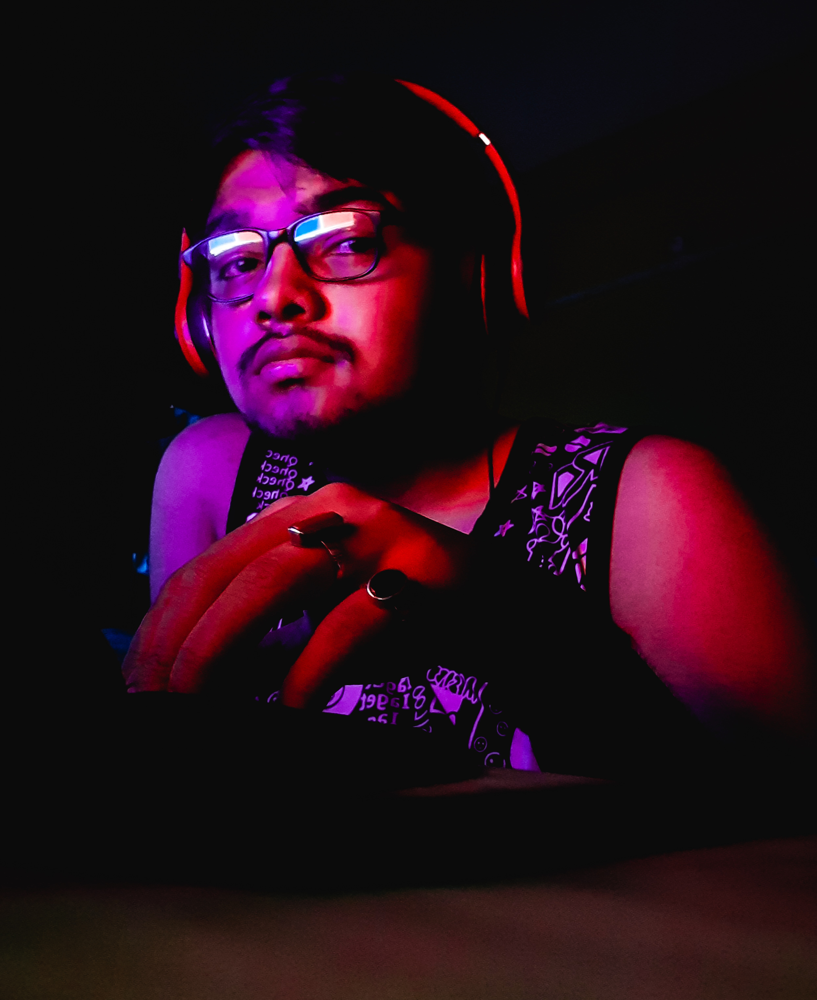

Aritra Maity

Summary
I am a student aiming to become a famed web developer. Be witness to my journey and lets meet at the pinaccle.
Education
- Secondary education from St Xavier's School, 96.8%
- Higher Secondary education from DAV public School, Stream = science, 84.8%
My Lore
I was an aspiring Doctor and was a serious NEET aspirant,
gave my first attempt in 2023 with my boards and secured a measly 370 marks.
planned to take a drop and a year later, its 566 and I am a failure.
Scored 94.1% in Jee Mains, 7000 rank in ComedK and 7.9k rank in WBJEE.
So to not make a complete loss of my existence, here I am trying to acieve somethong in the tech field
Hope I can achieve something and make my mum proud
Skills
- Communicating spontaneously
- Quiz enthusiast and good in general knowledge
- An avid book reader
- Constructive critic
Other